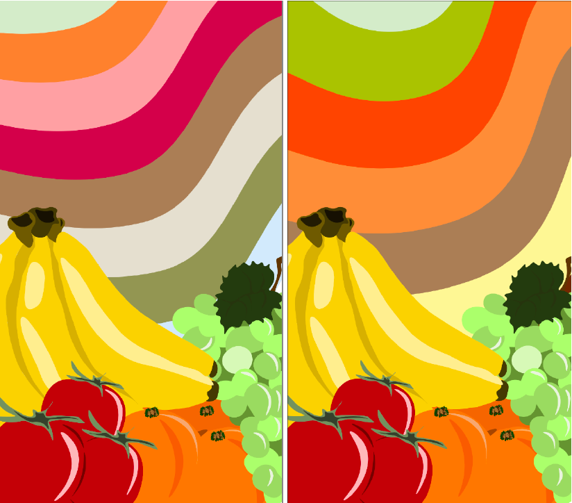
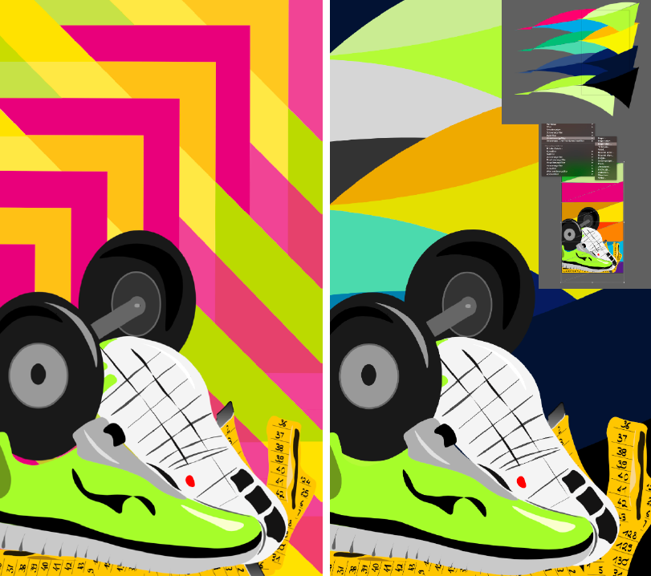
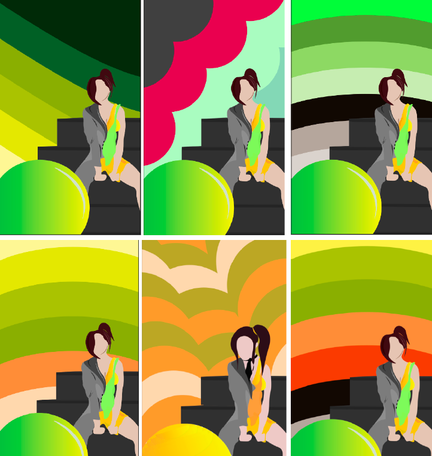
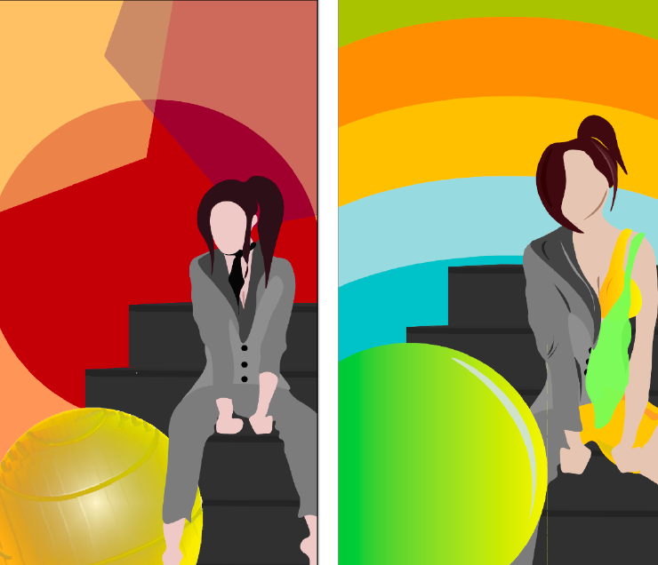

Screendesign
Unser Auftrag war, für das Startup FITVIT, vier Illustrationen zu gestalten zu den wichtigsten Themen und zwar: 1. Sport 2. Ernährung 3. Bewegung bei der Arbeit 4. Bewegung im Alltag (nicht fertig) Wir durften in den ersten Stunden recherchieren, sammeln, sichten und analysieren. Anschliessend durften wir Skizzen machen und Planen und natürlich auch Umsetzen und Gestalten. Bei dieser Aufgabe hatte ich mit dem recherchieren und Ideen Sammeln keine mühe, was mich besorgte war die Umsetzung, weil ich noch nie mit Adobe Illustrator gearbeitet habe zuvor. Aber ich bin überglücklich, dass ich die Möglichkeit hatte mit so einer tollen Aufgabe zu starten und schritt für schritt das Programm Endecken und Erforschen können. Nun fühle ich mich viel sicherer und verwende Illustrator auch in meiner Freizeit und im Betrieb. Aufbau Dokument In diesem Dokument werde ich mein Skizzen und Ideen auflisten und präsentieren mit Screenshots, Notizen und gescannte Dokumente aus mein Grafik Skizzen Buch.
   